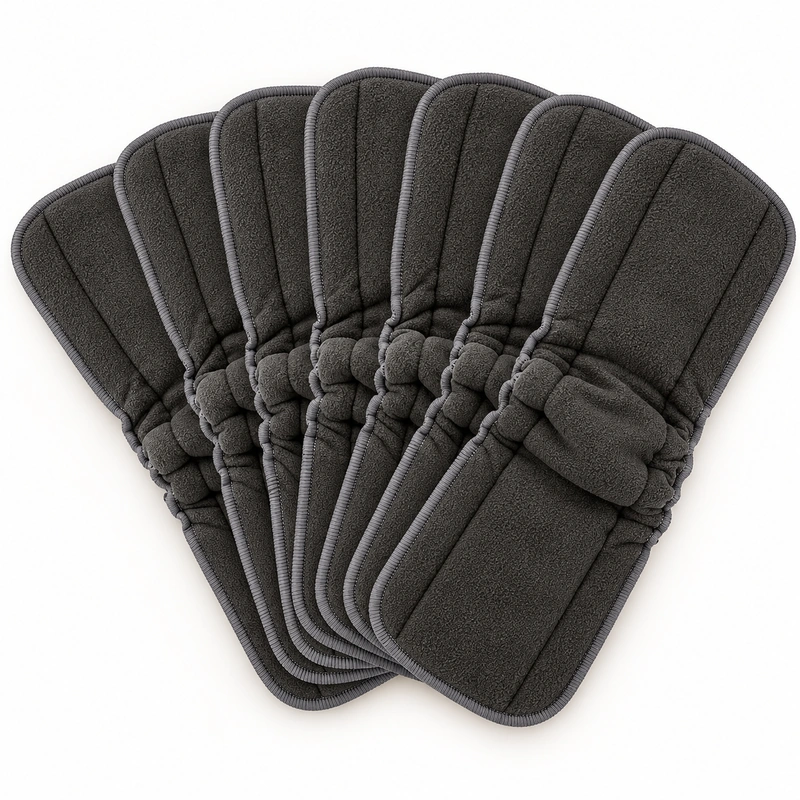

A buyer sourcing washable bamboo charcoal diaper inserts should ask for a layer-by-layer material declaration and a dimensioned sample. Confirm which textile is the outer face, what materials form the absorbent core, how many layers the finished insert contains, how its edges or gussets are made, and what method will be used to compare samples. The color or product name alone cannot answer those questions.
Start with the construction, not the label
“Bamboo charcoal” is commonly used as a product or fabric reference, but it does not by itself specify a finished insert. A black or charcoal-colored face fabric may be only one component. It does not prove what the inside contains, whether that fabric is on the skin-facing side or elsewhere, or how the insert performs in a defined evaluation.
Use the name to identify the style you want to discuss, then ask the supplier to document the reusable diaper insert materials in order from one face to the other. Keep each layer distinct in the quotation, sample label and approval record. The bamboo-charcoal inner-fabric reference can help identify a fabric option; it is not a complete insert specification.
Build a layer map buyers can approve
For each proposed construction, request a simple cross-section or written sequence. The goal is not to assume a standard recipe; it is to make different samples comparable and prevent a color name from standing in for material detail.
- Outer fabric blend and position: request the declared fiber composition, fabric type and the location of the charcoal-colored or bamboo-charcoal textile in the finished insert. Confirm whether it is a face layer, a core component, or another part of the construction.
- Absorbent materials: list every inner material in sequence and identify which layer or layers are intended to provide absorbency. If the supplier proposes a blend, ask for its composition in writing rather than inferring it from appearance.
- Layer count: record the total layers and name each one. Confirm whether the stated count includes face fabrics, internal absorbent components and any backing.
- Finished dimensions and tolerance: specify length and width after sewing, measurement points, and the allowed variation. For shaped products, add a drawing or agreed template so curves and gussets are measured consistently.
- Edge and gusset construction: state whether the sample is flat or shaped, how its perimeter is finished, and whether a gusset or other contour is required. The insert catalog shows both a charcoal reference and a separate gusseted style.

Keep a black fleece fabric reference separate
A fabric swatch or black fleece reference is useful when selecting a face textile, color or hand-feel target. It should be recorded as a fabric component, not as proof of a finished insert’s full construction. A finished product still needs its absorbent materials, layer sequence, joining method, dimensions and edge finish specified.
When requesting a quotation, attach both the fabric reference and the finished insert reference if both matter. Ask the supplier to confirm in writing where the fabric is used. For background on identifying fabric options, see inner-fabric references; for the finished item and other insert formats, review the cloth diaper inserts page.
Compare samples under one written method
A sample comparison is useful only when each candidate is assessed the same way. First agree on the reference revision and intended use. Identify every sample with a code, supplier, date and proposed construction. Photograph the front, reverse, edge and any cross-section, and retain the accompanying material declaration.
Record finished length and width at named points, the agreed tolerance, layer sequence and any construction differences. If dry weight is a purchasing criterion, define how the sample is conditioned and weighed. For an absorption comparison, agree the liquid, application amount, duration, support, measurement or observation method, repeat count and acceptance rule before testing. Do not compare a timed result from one sample with an informal impression from another.
For washable products, document a sample wash evaluation only after buyer and supplier agree on the wash method, cycles, drying approach and post-wash checks. Record what changed in dimensions, seams, shape or appearance. These notes describe the samples and method actually reviewed; they do not establish a general product claim or a certification. The cloth diaper quality inspection guide and sample approval workflow provide related checkpoints.
Quote-ready checklist for an OEM project
Send one concise brief that lets the factory identify the item and quote the same configuration you intend to approve:
- Product reference, intended use and target market.
- Outer fabric blend, type and exact position in the insert.
- Inner absorbent materials, their sequence and total layer count.
- Finished dimensions, measurement points, tolerance and any drawing.
- Flat or shaped profile, edge finish, gusset details and closure requirements, if any.
- Sample quantity and a mutually agreed dimensional, absorption and wash evaluation method.
- Quantity per retail pack, label and artwork requirements, individual packing and master-carton details.
- Destination country, requested documents and the approval contact.
Basic finished-style minimums range from 5 to 300 pieces depending on the product; confirm which minimum applies to the selected insert. Custom finished-product printing starts from 300 pieces. Confirm the exact pack configuration and packaging scope in the quotation. Confirmed in-stock styles may dispatch within two days; dispatch is not delivery, and availability must be checked.
For broader program support, review cloth diaper options, pocket diaper formats, incoming material inspection and private-label services. If you are ready to compare a sample or request pricing, send the insert requirements to ReuseCare.
Frequently asked questions
Does “bamboo charcoal” identify the full insert composition?
No. It does not establish the outer fabric blend, where the fabric is positioned, the absorbent materials, layer count or finished construction. Request the written layer map and confirm it against the sample.
Are eight pieces a standard pack quantity?
No. One product image shows eight inserts together as a visual reference. It does not define a universal retail pack. State your required pieces per pack and carton in the quote request.
How can buyers compare washable insert samples?
Use one approved revision and the same agreed method for all samples. Compare identified materials, finished dimensions and tolerance, construction, and any defined dry-weight, absorption or wash evaluation. Record deviations and approve one sample before bulk production.
What is the minimum order?
Basic finished styles have minimums from 5 to 300 pieces depending on the product. Custom finished-product printing starts from 300 pieces. Confirm the selected insert’s minimum and packaging requirements with the quotation.